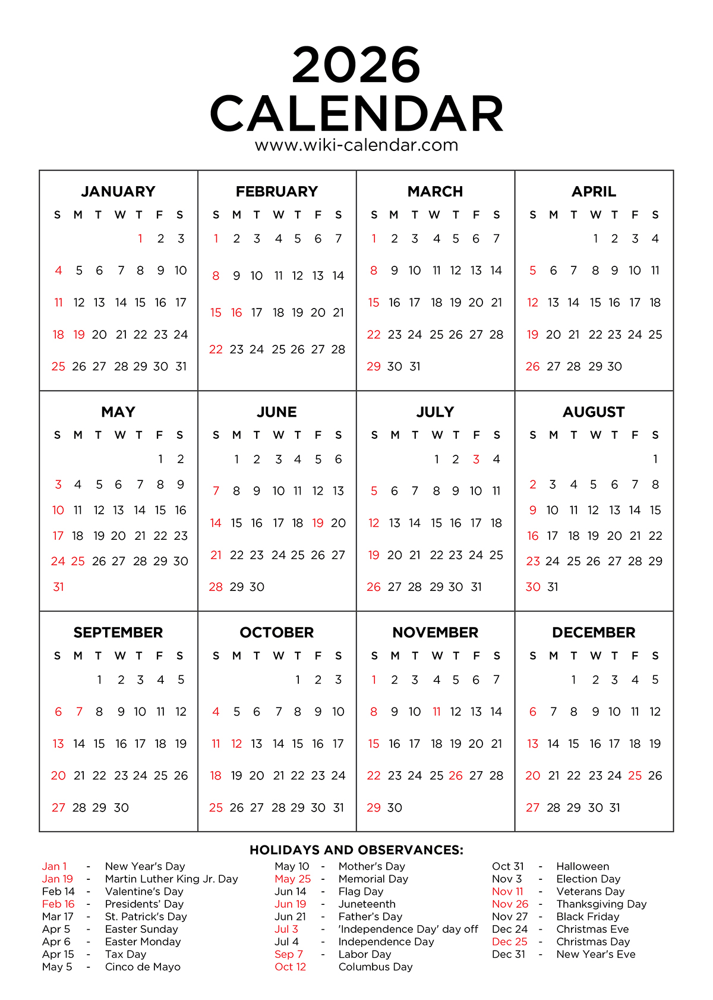

Some reflections, hopes, and plans for 2026
And looking back on how I did in 2025
Peter Licari ![]()

2025 is (thank Christ) just about over. Last year1 I wrote this blog post looking back on my goals for 2024 and outlining my goals for 2025. This will be the third year that I’ve done this and, reading both that post and the one preceeding it, I think I’m starting to understand—truly understand, deep in my marrow—why other folks have engaged with this sort of exercise. It’s really interesting to read back and see what I hoped to accomplish and what I thought things would be like.2 But what’s more interesting to me is what my goals implicitly said about my priorities when I wrote them compared to how I see them now. It may not come as a surprise to many people, but I’ve spent a lot of time thinking over the last 365 days. And, as always, a whole year’s worth of stuff has happened to inform that thinking.
So let’s go on ahead and write-in a general review of 2025.
2025
General Review…
If I had to give the first 3–4 months of 2025 a numerical rating, it would solidly be a 2 out of 5. Would not recommend.
I wrote in 2024 that a few health-related things would be “carr[ied] into the year as we sort things out.” I knew at the time that I was being optimistic; those words were just as much infused with hope as fact. I didn’t realize how far off the mark that optimism would be.
In early 2025, I was not only fretting why I was constantly having very intense chest pain, I was also dealing with a lot of really bizarre (or at least bizarre to me) neurological symptoms. I was dizzy, my coordination was off, I had frequent flares of brain-fog, I was having intense and chronic head and neck pain, my stomach was in constant knots and there was blood where there shouldn’t be and—not to be grosss—my literal shit was out of whack. My skin felt like it was on fire, my limbs felt like someone replaced my bones with lead and my muscles with twine. I was advised to not run until all of my cardiac tests were reviewed by my doctor, which ended up being 3 months. For context, I last took 3 months off from running when I was in 6th grade. I was dealing with all of this without my primary stress-release mechanism. And, despite not really exercising, my pain levels were getting worse. I already had anxiety but I learned rather intimately how much anxiety can amplify self-perceptions of pain, discomfort, and dread. There were 4 ER visits in the first 3 months of the year—all for (relatively) different things that came up while the preceding stuff persisted.
One of the ER doctors told me, not unkindly, that the only thing that caused mutiple systems to fritz out like this was stress. So I worked hard to become less stressed. If that sounds oxymoronic, you’re absolutely right. Don’t think of a pink elephant. Don’t be stressed about how the stress is (apparently) fucking up your body.
But then I got some test results back. And, with respect to that otherwise wonderful ER doctor, it turned out his list of things causing multisystem issues was incomplete. Stress can absolutely do so—and was undoubtedly playing a part. But so too can autoimmune conditions.
In hindsight, and I acknowledge how weird this is going to sound, I’m absurdly blessed. Many people suffer these symptoms at far greater intensities for years until they can see all the specialists and do all of the tests to determine what’s wrong. We more or less managed to figure out the (current) constellations of meidical issues within 6–8 months. I absolutely express-passed the medical system.3 I’m now at the point of medicine where diagnoses are more descriptive than prognostic. “Here’s what’s going on with your body. It may persist for a few weeks or, you know, forever. No real way of knowing.” Which means that the priority is on management and that diagnoses are liable to change as life progresses.
The good news, though, is life progresses. The remaining months of the year are definitely closer to a 4/5.
Thankfully, repeat testing has confirmed that my immune system is definitely agitated but that it’s not the big-bad scary things. Right now, we’re looking at Fibromyalgia and Iritable Bowel Syndrome (IBS).4 These things absolutely suck and come with their own host of ✨fun✨ side effects and symptoms, but they can be proactively managed. Doing so gives me pretty-close to my original quality of life back, though my best days now feel like I’m at an 8/10. But, ya know, I’m also now into my 30s. So who knows?! Maybe that last bit was always going to happen.
While those months sucked, it turned out that doctor was onto something with regards to stress. Stress and chronic illness often feed eachother in a viscious cycle: Stress and anxiety can be a symptom, they can make symptoms worse, and they can cause new, otherwise unrelated symptoms to arise. So I needed to get my house in order. Four things really helped make those things happen.
- I was cleared to run again. I’ve been doing low-and-slow miles for most of the year. I’m now back up to running 4-8 miles, 4-6 days a week. It’s not only helped with the stress, but sustainable aerobic exercise is actually one of the best treatments for Fibromyalgia and IBS.
- I started therapy. I started out twice a week, then once a week, then every other. I’ve always considered myself to be pretty “in-tune” with my mental health, but it turns out I was merely aware of it. I wasn’t doing much to deal with things healthily. I’ve got work to do yet, but it was instrumental to me being in a far better place today than I was last year. (And even further back, on some levels).
- I started taking an antidepressant. Incidentally, prozac has been shown in some folks to help with the pain and discomfort of Fibromyalgia. It’s not the go-to for Fibro, more for the anxiety and depression that is often comorbid with it, but I’ll take synergies where I can find them! I worried for years that medicine would make me feel different than myself. That was wrong. It makes me feel more like myself—especially the self that I more want to be, rather than a depressive/anxious mess.
- I started taking self-care seriously. I stopped giving a shit if the dishes would take an extra day to clean. I stopped berating myself that my laundry wasn’t folded on time. I prioritized my sanity, my energy levels, and my relationship with my wife and daughter. And, amazingly, once I got myself in a better place vis my mental health and pain, I found myself more capable with regards to the rest.
There were, of course, other pretty bad things that happened.
- My grandfather, a man who inspired me in many ways and is the source of my middle name, passed away after a near-decade’s long fight with Parkinsons.
- We had to replace our fridge, oven, and water heater. Oh and there was also a $2,000 plumbing repair.
- Rose had about $2,000 worth of dental work done.
- Multiple emergency repairs to the car(s).
- My cat is getting older. I know that we all are, but this is in the way that the vet has started talking about whether particular treatments for her ailments are even worth doing “given her age”. I’ve had her since before I had my bachelor’s degree; I’ve been through almost everything in my adult life with this cat. My heart aches, but I’m enjoying the cuddles while I can.
- *Waves arms at the various bits of fuckery that emerged from the political landscape this year*.
For some folks reading this, all of the medical stuff and other hardships may come as a surprise5. I’ve made mention or reference to my health throughout the year, but only a handful of people have gotten the full story. And I actually take a fair bit of pride in that. Despite all that my family and I went through this year, I still managed to do things.
You may have heard of Epic Universe, Universal’s new theme park. Care to guess how difficult it is to make statistical forecasting models for that when the last major theme park to open in Florida was Animal Kingdom in 1998? You may have heard of the devastating fires and the federal intervention in LA—ever wonder how hard it is to forecast how that’s all going to affect a theme park’s annual attendance?6 Yet I not only helped make models that were, in hindsight, pretty dang good—I also had time for other projects at work7 as well as consulting on projects via my “side-hustle”, Technites that were insanely interesting and timely. I also published an R package to CRAN, a Python package to PyPi, and completed a lot of home improvement projects. (I also finished a lot of lego sets. Objectivley, less important and impressive than those other things, but it matters to me, danggumit!) So the fact that I could be dealing with all of that, while still being able to get shit done? Yeah. I’m pretty damn proud of that.
But, as I mentioned, I’d actually rank this year as better than last on the whole with the last few months being about 4/5 stars. So let’s keep talking highlights, shall we?
- My wife’s health has improved tremendously. It hasn’t been perfect, but we’ve gotten so much better at proactively managing her health issues.
- A consequence of us both dealing with health problems has been us communicating our needs better and leaning on each other more. Self care for both of us includes a lot of little dates and time for just the two of us. So, in short, my marriage fucking rocks; it’s literally never been stronger.
- One of those “little dates” was reliving our Emo days at Orlando Warped Tour. Which literally fucking rocked.
- Rose started kindgergarten and is absolutely thriving socially and academically.
- Rose also started Soccer and Girl Scouts! Involving ourselves more in these commmunities has been wonderful, giving us a lot of fun activities to bond over.
- In general, Rose continues to grow into a thoughtful, intelligent, curious, empathetic, and sweet kid. I’m amazed every day how much more I can love this kid and enjoy being her dad. Fatherhood is the toughest job I’ll ever have but it is by far the most rewarding.
- I’ve cut back substantially on social media and replaced it with a lot of hands-on activities. Largely cooking and baking! Which has meant a lot of delicious food in the Licari household.
- We got to go to Epic prior to its opening. I may sound like a shill when I say this but, genuinely, it’s freaking amazing and you should try to find a way to go to it.
- Speaking of Universal: I continue to have projects that are intellectually stimulating while working with incredibly smart and kind people.
- I got to visit my family in California in October thanks to a work trip to the bay area, a rental car, and an unadvisable amount of caffeine.
- We got to see friends and family on a bunch of ocassions.
- Xena has become so integrated into the family that it’s amazing to think that we somehow haven’t always had her. She’s a sweet, rambuncious goober who is too smart (and food motivated) for her own good. But we love her deeply.
- As of just a few days ago, I’m officially a Great Uncle! My nephew and his wife welcomed their first son into the world and I’m so excited for their journey ahead.
- I’ve continued to have opportunities to consult and lead interesting statistics and data science work for more clients than I had last year.
I’ve joked a lot this year among friends that chronic illness was God’s way of saying “fine, I’m going to make you slow down.” And, you know what, I needed to. What I’ve lost in some areas, I’ve more than gained in the deepness in my relationship with those who matter most. And I’ve learned to actually include my relationship with myself on that list.
What’s funny is that I’m a distance runner: I know that you can’t run a marathon by sprinting full bore from gun to tape. I also know that, sometimes, you need to slow down to finish the final miles of your race strong—or even to finish it at all. And yet, I treated the longest race of all like I had limitless energy—like I could somehow outwill exhaustion and all of its consequences. To quote Ecclesiastes: “This too is vanity.”
I’ve slowed down, but I feel like I’ve actually gotten back to a pace that’s sustainable. It’ll undoubtedly require some adjustments as time goes forward. But these adjustments aren’t going to be monotonic; it’s not always going to be slowing down. I’m just going to have to make sure that I balance my bursts with plenty of rest. My goal is to finish the race with a smile on my face. I’m blessed to be able to say that I’ve got more miles left in me than I thought I had at the depths of this year’s worst parts. A lot more. I’m excited to run them.
Goal Review
Ok, so, remember how last year I wrote:
Implicit in all of these [goals] is to actually maintain a logging system that helps me achieve all of these goals.
I love how I’m able to so effectively predict what the difficulty will be while still falling victim to it. It’s like knowing that traffic conditions will add 15 minutes to your commute, leaving when you normally would, and then lamenting that you’re late.8
Ok, so, I completely failed at tracking how well I did at things. In my defense, I kind of felt that “tracking my goals for the year” was akin to the aforementioned “letting the dishes stay in the sink longer than I’d like”. It was, shall we say, a lower priority than maintaing my health, relationships, and job(s). That’s not to say that I didn’t work on it at all, but I didn’t have a lot of time and energy to spare on ironing out the kinks in my productivity systems.
Last year I had “intangible” goals and measurable ones. Let’s tackle the intangible goals first since ascertaining the latter has also been reduced to vibes.
Intangible goals.
There were two big intangible goals I set for 2025.
- Focus on my health, including my mental health, and making things more sustainable.
- Focus more on my involvement in my local community. Try to make my little corner of the world a bit more like how I want the macroscopic world to be.
On the whole, I think I’ve been successful with these two. Well, the first few months of 2025 was an absolute fucking F on goal one, but an A on the rest! That’s at least a C average. That’s still graduating baybeeee.
The second I’ve been much more successful with. We’ve done a lot to be more involved in our local area and put down roots. And, I’ve got to say, it had exactly the effect on myself and my little corner of the world that I’d hoped. I’ve gone to community events, parades, parties, I’ve even now treasurer of my HOA. And despite my introversion, I don’t hate it? Some days my social batteries are fried, but I feel very fulfilled on the whole. So, by and large, I think that 2025 was actually quite successful on these fronts.
Quantifiable goals.
Ok, let’s go ahead and grade myself on the “measurable” goals keeping in mind that I failed to “measure” it anywhere near as accurately as I would like. Some of these are failures. But, actually, the failures were better for me than I had I succeeded. Some failures are genuinely whiffs though.
- Ingest 100 books (manga, comics, and Great Courses count). I’m very confident I hit this one and then some.
- Listen to 200 new-to-me albums I’m similarly confident that I missed this one by a bit. I probably got closer to 150 albums.
- Check in to Duolingo 150 times with a streak at least 50 days long. Oh I completely whiffed here. Duo was pretty pissed off at me. Good thing he doesn’t actually know domain expansion
- Play 10-15 new games (board/tabletop games count) Thanks to my best friend taking me through all 6 Gears of War games in November/December, this absolutely happened!
- Learn to cook 10-15 new recipes/foods (new cooking techniques to rehash old recipes count) I’m probably just shy of 10 but it’s very close. I’ve really been leaning into cooking lately—thought it’s a lot of repeat recipes to try and hone a particular dish.
- Watch 15-20 new-to-me movies Thanks to my grandmother gifting us AMC gift cards, we’ve definitely go this one in the bag!
- Watch 20-30 new/new-to me TV seasons. At least 5 involving flesh and blood humans. Ok. I definitely got half credit here because I watched, once again, a lot of anime but very little live action stuff. Hell, even my live action stuff was based on animated IP! I’ll try again next year…
- Ingest 50 documentaries (YouTube videos and podcasts count if longer than 30 minutes on a single topic). As long as cooking shows count! (Even if they don’t I definitely did this; I binged RealLifeLore like it was my job.)
- Keep my weight between 150-160lbs. Bring my body fat percentage down below 14%. I have no fucking clue what my body fat percentage is and I do not want to know. Part of my health anxiety came from my obsession over measuring everything from heart rate to temperature. It’s unhealthy for me. I got to 160 this year and I’ll just be fine with what solely knowing what little dial on the scale says, thanks. If something else is going sideways, I’ll wait for my bloodwork and doctors to tell me.
- Have at least 30 weeks where I run more than 30 miles in that week. See above, vis all of my health shit this year.
- Visit the gym an average of 2-3 times a week. I actually cancelled my gym membership. And I’m glad to have done it, actually.
- Average 20 sessions of Yoga a month. I failed at this one but, honestly, I wish I hadn’t. Yoga will be huge for me going forward.
- Average 2 sessions of core per week. Failed it but I needed to reevaluate
- Run one race with a performance I’m proud of. I couldn’t run a race but I’m just proud to be out there, running.
- Write 15-20 issues of Pulse of the Polis. I honestly do not care that I failed this one. I need to rethink this project and its importance to me.
- Write 20-30 pieces of non-PotP content (blog posts, reviews, white/working papers, tutorials, poetry, micro-fiction, whatsver. So long as it took some effort to write). I probably got about 10 of these done. I actually wrote a fair bit of poetry this year. That was nice and I want to continue with it.
- Write 50 daily dairy entries. I failed this but I’m feeling less bad about it. I want to want to be a guy who journals. But I either need to shift the cadence or accept that this isn’t how my brain operates.
- Post 20 things of value to others on LinkedIn. …Define “value” (but still, no.)
- Attend at least one Quaker Meeting. I attended service once when I was admitted to the hospital. I’ll count this as half done. (Again, “bad” Quaker; trying to be better.)
- Make 1 video. I didn’t this year but I have ideas for videos again! And I’d rather reprioritize this than other content projects. We’ll see.
- Contribute to/make 3 open source/code projects. 2 of 3! I’ve made and maintain some R and Python packages for work though if that counts? (It doesn’t—but still!)
- Make 5-10 things that physically exist (e.g., legos, home repairs, digital art that I would or do hang in my house). I did those with Lego alone but I’ve done other art projects this year too. And it emphasized how important art is to me, generally. So I want to do more of it.
- Have 15-20 coffee chats with long-distance friends new and old (actually seeing them counts too). I think I just missed this. The health concerns didn’t help me here. I’d like to do more of this going forward now that things have stabilized.
- Log at least 20 hours practicing drumming. Complete whiff. I need to dedicate more time to drumming. That way I can justify buying an electric kit with a double bass pedal to myself.
2026
Let’s go ahead and look forward now.
As with last year, I have some intangible goals as well as quantifiable ones.
Intangible Goals for 2026
This last year emphasized to me that prioritizing my health (including mental health) is not a luxury for me. Treating myself like I’m expendable is a great way for me to feel bad on multiple compounding levels.
I’ve written the last couple years of having an impressionistic vision of myself at 40 that I’m striving for. I’m surprised, in hindsight, how little of that vision has changed. But I find myself more emphasizing the setting of that piece: namely, the other characters in the frame with me. They were always there, of course, but their prominence in my vision of the future has increased dramatically. But in a way that better synergizes with the rest of the goals. I can’t be there to roll my eyes at my daughter’s (multiply)inherited stubbornness if I don’t take care of myself. And—turns out—I don’t need to bench twice my body-weight to be “taking care of myself”. I want to go on long trips with my family, but that will mean ensuring that I’m in an employment situation where I can take several weeks off of work without worrying if it all came crashing down in my absence. But all of the time off in the world won’t mean anything if I’m not mentally capable of disconnecting and de-stressing.
At the risk of mixing my artistic metaphors a bit: It is said that Michelangelo’s attitude was “simply” to remove all of the marble that was not David. I am starting to not just find the things that are important for my future goals, I am also starting to remove the things that will impede or inhibit me from getting there. That also means removing “excess” that I initially thought would matter but doesn’t. For example, I genuinely thought that it mattered to me that I be able to do 40 pull-ups when I’m 40 and that I be able to bench twice my weight—while being able to run a respectable marathon. I could find examples of people who could do those things but the exceptions distracted me from the ubiquitous others embodying the rule: exceptional performance for those without innate talent comes from some degree of specialization. So I had to choose what kind of physicality mattered most to me. I chose being happy to run long distances. That doesn’t mean I can’t also lift weights or be strong, but I’ve come to accept that it does mean that I need to adjust my other goals accordingly.9 I don’t need to be superlative in everything. It’s fine to just be good or ok (or, God forbid, bad) at something so that you can be good at something that’s more important to you. I want to continue chipping away at the things that will not actually bring me closer to where I want to be.
Another thing that I’ve come to viscerally realize this year is the truth behind the statement “you fall to the level of your systems.” As I continue to learn about and navigate my ADHD, I’m realizing that systems do not suffocate creativity—they often enable creativity. For example, I’ve been spending an hour so on Sunday for the past few weeks to plan what chores I’m going to tackle and what meals I’m going to cook and it has been tremendous because I’m no longer exahusting myself day-of. Also, I was legitimately much happier when my phone was not allowed into my bedroom. I want to go back to doing that. I want to continue making habits and systems that supports all the best parts of me.
The last one I’ll talk about here is leaning more into my faith and identity as a Quaker—partially because I feel like doing so really helps encapsulate a lot of the smaller intangible goals that have been rattling around in my head for the last few months. I want to cut back on social media and digital technologies that feel socially parasitic—hello Testimony of Simplicity! I want to continue leaning in to my community and being of service to others—oh, how do you do Testimony of Community?! I want to keep finding ways to be environmentally conscious and improve the social world around me—oh, didn’t see you there, Testimony of Stewardship10. I feel like a lot of these goals will see simultaneous progress if I start approaching my life a bit more as being part of a tradition that is physically, socially, and temporally larger than myself. And I will feel closer to God and my fellow sentient beings by being a better Quaker. So, you know, win-win; two-birds, one stone; etc.
Alright, let’s go ahead and move into the measurable goals.
Measurable Goals
As I mentioned at the top of this post, one of the things that I found interesting looking retrospectively on the previous “looking forwards”s was what the goals said about my priorities. A lot of them reflected unscrutinized assumptions about what will make me feel happy and fulfilled. Others were fine on that account but my priorities have changed regarding specific projects (again, I’m removing some of the extra marble). Another was reflecting on the things I hadn’t put onto my list but that I grew to see as more important.
Anyhow, without further ado:
- Ingest 100 books (manga, comics, and Great Courses count)
- Listen to 200 new-to-me-albums
- Play 10-15 new games (board games count)—at least 50% being done on my new PS5.11
- Keep my weight between 150-160 pounds.
- Write 10-15 recipes. One of which for Sourdough.12
- Incorporate stretching and sunscreen into my daily morning routine.
- Average 20 sessions of Yoga a month.
- Attend at least 1 Quaker meeting.
- Make at least 1 project that involves C++.
- Complete 2 Codecademy courses on Javascript.
- Watch 15-20 new/new-to-me TV seasons. 5 of which are live action.
- Ingest 50 documentaries.
- Log 20 hours practicing drumming.
- Log 50 hours practicing a foreign language (split between Spanish and Italian).
- Attend one Quaker Meeting.
- Create 20-30 pieces of writing (blog posts, reviews, white/working papers, tutorials, poetry, micro-fiction, whatsver. So long as it took some effort to write).
- Contribute to/make 3 open source/code projects.
- Make 10-15 things that physically exist and/or art projects.
- Have 15-20 “coffee-chats” with family and friends, new and old.
- Run, on average, 4.5 days per week.
- Take an equivalent of 4 classes this year in stuff I find interesting.13
- Read 300 articles/white papers/technical blog posts.
Bonus, conditional goal: If cleared to weight lift/do strength training: Have the modal week in the second half of the year have 3 strengthening sessions (core and/or lifting for at least 20 minutes).
Again, I’ve actually got to keep track of these things. But you’ll notice that the website has been redesigned. That is not a coincidence. I’ll be working on it over the next few weeks. I’ve got plans…
Happy New Year folks. 🖤
Footnotes
Though thanks to a mislabeled date field, it spent most of its life to-date on this site spent as being “published” in 2024.↩︎
“We plan; God laughs” and all that↩︎
Don’t worry: If you’re jealous at the speed that this got done, the amount of medical-related debt I have has skyrocketed. But, you know, it’s maybe only slightly more expensive than actual express passes at theme parks. Wacka wacka!↩︎
There’s quite a bit more going on, actually. One of the things about Fibromyalgia is that it’s a diagnosis of exclusion. And we found a bunch of weird little things while we were excluding the big bad things. Like my blood apparently doesn’t clot fast enough because I have (or have developed) Von Willebrands. My liver enzymes are high but that’s overwhelmingly likely to be Gilbert’s Syndrome. My heart beats slightly weird and I have mild neck damage. Stuff like that. But those are the two biggies.↩︎
Well except the political fuckery. If you’re entirely unaffected by that, then you might need to do some introspection. This is coming from a former Republican.↩︎
Believe me, I know that “the effect of this on tourism” is far from the topmost consideration in either of these things. Statistical forecasting challenges are a very priveleged problem to have in these contexts. But it is a genuine problem for a major employer in this area—and since said employer is also my employer, it was still a problem needing my attention. But, don’t worry, I also fretted about climate change and democratic backsliding while puzzling over ARIMA models. My anxious ass can multitask.↩︎
Including being a major player on making a strategic recommendation that helped Universal save literal hundreds of millions of dollars.↩︎
Something many of my fellow ADHDers will relate with. Time blindness, represent!↩︎
It helps that I’m not really encouraged to do core or weight lift on account of the chest pain but I’m hoping to be medically cleared for those activities come mid-year.↩︎
If you’re curious about what I mean by “testimony” here, feel free to read up on SPICES!↩︎
Santa was good to me this year.↩︎
I really love sourdough.↩︎
Reuse
Citation
@online{licari2026,
author = {Licari, Peter},
title = {Some Reflections, Hopes, and Plans for 2026},
date = {2026-01-05},
url = {https://www.peterlicari.com/posts/2025_review_2026_goals/},
langid = {en}
}